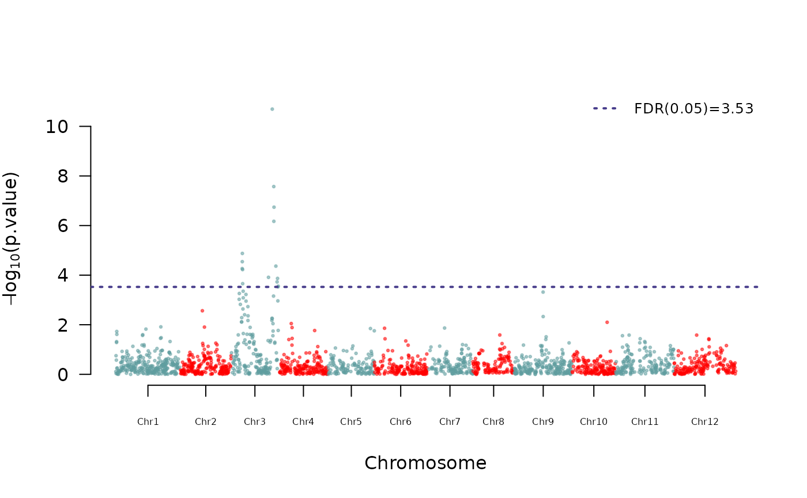

Quick start for the sommer package
Giovanny Covarrubias-Pazaran
2024-09-30
Source:vignettes/v1.sommer.quick.start.Rmd
v1.sommer.quick.start.RmdThe sommer package was developed to provide R users with a powerful and reliable multivariate mixed model solver. ThThe package is focused on two approaches: 1) p > n (more effects to estimate than observations) using the mmer() function, and 2) n > p (more observations than effects to estimate) using the mmec() function. The core algorithms are coded in C++ using the Armadillo library. This package allows the user to fit mixed models with the advantage of specifying the variance-covariance structure for the random effects, specifying heterogeneous variances, and obtaining other parameters such as BLUPs, BLUEs, residuals, fitted values, variances for fixed and random effects, etc.
The purpose of this quick start guide is to show the flexibility of the package under certain common scenarios:
SECTION 1: Introduction
- Background on mixed models
- Background on covariance structures
SECTION 2: Different models enabled in sommer
- Univariate homogeneous variance models
- Univariate heterogeneous variance models
- Univariate unstructured variance models
- Multivariate homogeneous variance models
- Details on special functions for variance models
- the major vsr() and vsc() functions for special variance models and its auxiliars:
- atr() and atc() specific levels heterogeneous variance structure
- dsr() and dsc() diagonal covariance structure
- usr() and usc() unstructured covariance
- csr() and csc() customized covariance structure
- isc() function for main effects
- The specification of constraints in the variance-covariance
structures
- unsm() unstructured constraint
- fixm() fixed constraint
- fcm() constraints on fixed effects
- Special functions for special models
- Random regression models
- Overlayed models
- Spatial models
- GWAS models
- Customized random effects
- Genomic selection (predicting mendelian sampling)
- GBLUP
- rrBLUP
- Likelihood ratio tests
- Final remarks
SECTION 3: The predict function
- Background on prediction
- Predicting means
SECTION 1: Introduction
1) Background on mixed models
The core of the package is the mmer function which
solves the mixed model equations. The functions are an interface to call
the NR Direct-Inversion Newton-Raphson or Average
Information algorithms (Tunnicliffe 1989; Gilmour et al. 1995; Lee et
al. 2016). From version 2.0, sommer can handle multivariate models.
Following Maier et al. (2015), the multivariate (and by extension the
univariate) mixed model implemented has the form:
…
where is a vector of trait phenotypes, is a vector of fixed effects, is a vector of random effects for individuals and are residuals for trait ‘i’ (i = 1, …, t). The random effects ( … and ) are assumed to be normally distributed with mean zero. X and Z are incidence matrices for fixed and random effects respectively. The distribution of the multivariate response and the phenotypic variance covariance (V) are:
Y ~ MVN(, V)
where K is the relationship or covariance matrix for the kth random effect (u=1,…,k), and H=I is an identity matrix or a partial identity matrix for the residual term. The terms and denote the genetic (or any of the kth random terms) and residual variance of trait ‘i’, respectively and and the genetic (or any of the kth random terms) and residual covariance between traits ‘i’ and ‘j’ (i=1,…,t, and j=1,…,t). The algorithm implemented optimizes the log likelihood:
where || is the determinant of a matrix. And the REML estimates are updated using a Newton optimization algorithm of the form:
Where
is the vector of variance components for random effects and covariance
components among traits,
is the inverse of the Hessian matrix of second derivatives for the kth
cycle,
is the vector of first derivatives of the likelihood with respect to the
variance-covariance components. The Eigen decomposition of the
relationship matrix proposed by Lee and Van Der Werf (2016) was included
in the Newton-Raphson algorithm to improve time efficiency.
Additionally, the popular vpredict() function to estimate
standard errors for linear combinations of variance components
(i.e. heritabilities and genetic correlations) was added to the package
as well.
Please refer to the canonical papers listed in the Literature section to check how the algorithms work. We have tested widely the methods to make sure they provide the same solution when the likelihood behaves well but for complex problems they might lead to slightly different answers. If you have any concern please contact me at cova_ruber@live.com.mx.
In the following section we will go in detail over several examples on how to use mixed models in univariate and multivariate case and their use in quantitative genetics.
2) Background on covariance structures
One of the major strenghts of linear mixed models is the flexibility to specify variance-covariance structures at all levels. In general, variance structures of mixed models can be seen as tensor (kronecker) products of multiple variance-covariance stuctures. For example, a multi-response model (i.e. 2 traits) where “g” individuals (i.e. 100 individuals) are tested in “e” treatments (i.e. 3 environments), the variance-covariance for the random effect “individuals” can be seen as the following multiplicative model:
T G A
where:
is the covariance structure for individuals among traits.
is the covariance structure for individuals among environments.
and is a square matrix representing the covariance among the levels of the individuals (any known relationship matrix).
The T and G covariance structures shown above are unknown matrices to be estimated whereas A is known. The T and G matrices shown above are called as unstructured (US) covariance matrices, although this type is just one example from several covariance structures that the linear mixed models enable. For example, other popular covariance structures are:
Diagonal (DIAG) covariance structures
Compound simmetry (CS) covariance structures
First order autoregressive (AR1) covariance structures
or the already mentioned Unstructured (US) covariance structures
among others. Sommer has the capabilities to fit some of these covariance structures in the mixed model machinery.
SECTION 2: Different models enabled in sommer
1) Univariate homogeneous variance models
This type of model refers to single response models where a variable of interest (i.e. genotypes) needs to be analyzed as interacting with a 2nd random effect (i.e. environments), but you assume that across environments the genotypes have the same variance component. This is the so-called compound symmetry (CS) model.
## Loading required package: Matrix## Loading required package: MASS## Loading required package: crayon
data(DT_example)
DT <- DT_example
## solving for r records
ans1r <- mmer(Yield~Env,
random= ~ Name + Env:Name,
rcov= ~ units,
data=DT, verbose = FALSE)
summary(ans1r)$varcomp## VarComp VarCompSE Zratio Constraint
## Name.Yield-Yield 3.681877 1.6909561 2.177394 Positive
## Env:Name.Yield-Yield 5.173062 1.4952313 3.459707 Positive
## units.Yield-Yield 4.366285 0.6470458 6.748031 Positive
## solving for c coefficients
ans1c <- mmec(Yield~Env,
random= ~ Name + Env:Name,
rcov= ~ units,
data=DT, verbose = FALSE)
summary(ans1c)$varcomp## VarComp VarCompSE Zratio Constraint
## Name:isc:isc 3.683153 1.880974 1.958109 Positive
## Env:Name:isc:isc 5.174116 2.420486 2.137635 Positive
## units:isc:isc 4.359651 2.270467 1.920156 Positive2) Univariate heterogeneous variance models
Very often in multi-environment trials, the assumption that the genetic variance or the residual variance is the same across locations may be too naive. Because of that, specifying a general genetic component and a location specific genetic variance is the way to go. This requires a CS+DIAG model (also called heterogeneous CS model).
data(DT_example)
DT <- DT_example
ans2r <- mmer(Yield~Env,
random= ~Name + vsr(dsr(Env),Name),
rcov= ~ vsr(dsr(Env),units),
data=DT, verbose = FALSE)
summary(ans2r)$varcomp## VarComp VarCompSE Zratio Constraint
## Name.Yield-Yield 2.962851 1.4962000 1.980251 Positive
## CA.2011:Name.Yield-Yield 10.146369 4.5073271 2.251083 Positive
## CA.2012:Name.Yield-Yield 1.877530 1.8697568 1.004158 Positive
## CA.2013:Name.Yield-Yield 6.629152 2.5028114 2.648682 Positive
## CA.2011:units.Yield-Yield 4.942450 1.5245057 3.242001 Positive
## CA.2012:units.Yield-Yield 5.724963 1.3123015 4.362536 Positive
## CA.2013:units.Yield-Yield 2.559880 0.6399685 4.000010 Positive
DT=DT[with(DT, order(Env)), ]
ans2c <- mmec(Yield~Env,
random= ~Name + vsc(dsc(Env),isc(Name)),
rcov= ~ vsc(dsc(Env),isc(units)),
data=DT, verbose = FALSE)
summary(ans2c)$varcomp## VarComp VarCompSE Zratio Constraint
## Name:isc:isc 2.961884 1.4528416 2.038683 Positive
## Env:Name:CA.2011:CA.2011 10.148234 4.5621620 2.224435 Positive
## Env:Name:CA.2012:CA.2012 1.878549 1.8883269 0.994822 Positive
## Env:Name:CA.2013:CA.2013 6.629514 2.4890963 2.663422 Positive
## Env:units:CA.2011:CA.2011 4.942515 1.5201275 3.251382 Positive
## Env:units:CA.2012:CA.2012 5.724688 1.3325966 4.295890 Positive
## Env:units:CA.2013:CA.2013 2.559825 0.6395343 4.002639 PositiveAs you can see the special function atr or
diag can be used to indicate that there’s a different
variance for the genotypes in each environment. The same was done for
the residual. The difference between atr and
diag is that the atr function can be used to
specify the levels or specific environments where the variance is
different.
3) Unstructured variance models
A more relaxed asumption than the CS+DIAG model is the unstructured
model (US) which assumes that among the levels of certain factor
(i.e. Environments) there’s a covariance struture of a second random
effect (i.e. Genotypes). This can be done in sommer using the
usr(.) function:
data(DT_example)
DT <- DT_example
ans3r <- mmer(Yield~Env,
random=~ vsr(usr(Env),Name),
rcov=~vsr(dsr(Env),units),
data=DT, verbose = FALSE)
summary(ans3r)$varcomp## VarComp VarCompSE Zratio Constraint
## CA.2011:Name.Yield-Yield 15.6650010 5.4206906 2.8898534 Positive
## CA.2012:CA.2011:Name.Yield-Yield 6.1101600 2.4850649 2.4587527 Unconstr
## CA.2012:Name.Yield-Yield 4.5296090 1.8208107 2.4876881 Positive
## CA.2013:CA.2011:Name.Yield-Yield 6.3844808 3.0658977 2.0824181 Unconstr
## CA.2013:CA.2012:Name.Yield-Yield 0.3929997 1.5233985 0.2579757 Unconstr
## CA.2013:Name.Yield-Yield 8.5972750 2.4837814 3.4613654 Positive
## CA.2011:units.Yield-Yield 4.9698460 1.5322540 3.2434870 Positive
## CA.2012:units.Yield-Yield 5.6729333 1.3007862 4.3611574 Positive
## CA.2013:units.Yield-Yield 2.5570940 0.6392821 3.9999462 Positive
DT=DT[with(DT, order(Env)), ]
ans3c <- mmec(Yield~Env,
random=~ vsc(usc(Env),isc(Name)),
rcov=~vsc(dsc(Env),isc(units)),
data=DT, verbose = FALSE)
summary(ans3c)$varcomp## VarComp VarCompSE Zratio Constraint
## Env:Name:CA.2011:CA.2011 14.492642 3.3536970 4.3213927 Positive
## Env:Name:CA.2011:CA.2012 5.804743 1.9402333 2.9917760 Unconstr
## Env:Name:CA.2012:CA.2012 4.456845 2.4466754 1.8215925 Positive
## Env:Name:CA.2011:CA.2013 5.628452 1.5551412 3.6192546 Unconstr
## Env:Name:CA.2012:CA.2013 0.487732 1.4943128 0.3263922 Unconstr
## Env:Name:CA.2013:CA.2013 8.152593 2.0718946 3.9348494 Positive
## Env:units:CA.2011:CA.2011 4.960032 1.5272879 3.2476074 Positive
## Env:units:CA.2012:CA.2012 5.634496 1.3028875 4.3246219 Positive
## Env:units:CA.2013:CA.2013 2.557155 0.6385661 4.0045273 PositiveAs can be seen the usr(Env) indicates that the genotypes
(Name) can have a covariance structure among environments (Env).
4) Multivariate homogeneous variance models
Currently there’s a great push for multi-response models. This is
motivated by the correlation that certain variables hide and that could
benefit in the prediction perspective. In sommer to specify multivariate
models the response requires the use of the cbind()
function in the response, and the usr(trait),
diag(trait), or atr(trait) functions in the
random part of the model.
data(DT_example)
DT <- DT_example
DT$EnvName <- paste(DT$Env,DT$Name)
DT$Yield <- as.vector(scale(DT$Yield))
DT$Weight <- as.vector(scale(DT$Weight))
ans4r <- mmer(cbind(Yield, Weight) ~ Env,
random= ~ vsr(Name, Gtc=unsm(2)),
rcov= ~ vsr(units, Gtc=diag(2)),
data=DT, verbose = FALSE)
summary(ans4r)$varcomp## VarComp VarCompSE Zratio Constraint
## u:Name.Yield-Yield 0.2448029 0.07278135 3.363540 Positive
## u:Name.Yield-Weight 0.3177637 0.07457957 4.260733 Unconstr
## u:Name.Weight-Weight 0.2813217 0.08054357 3.492789 Positive
## u:units.Yield-Yield 0.3725767 0.04331247 8.602066 Positive
## u:units.Weight-Weight 0.3586951 0.04189443 8.561882 Positive
DT2 <- reshape(DT, idvar = c("Name","Env","Block"), varying = list(6:7),
v.names = "y", direction = "long", timevar = "trait", times = colnames(DT)[6:7])
DT2$trait <- as.factor(DT2$trait)
# ans4c <- mmec(y ~ Env:trait,
# random= ~ vsc(usc(trait),isc(Name)),
# rcov= ~ vsc(dsc(trait),isc(units)), returnParam = T,
# data=DT2, verbose = T)
# summary(ans4c)$varcompYou may notice that we have added the usr(trait) behind
the random effects. This is to indicate the structure that should be
assumed in the multivariate model. The diag(trait) used
behind a random effect (i.e. Name) indicates that for the traits modeled
(Yield and Weight) there’s no covariance component and should not be
estimated, whereas usr(trait) assumes that for such a
random effect, there’s a covariance component to be estimated
(i.e. covariance between Yield and Weight for the random effect Name).
The same applies for the residual part (rcov).
Any number of random effects can be specified with different structures.
5) Details on special functions for variance models
the vsr() function for special variance models and its auxiliaries
The sommer function vsr() allows constructing complex
variance models that are passed to the mmer() function
which constitutes one of the most important features of the sommer
package. The specification of the vsr() function has the
form:
random=~vsr(..., Gu, Gti, Gtc)
The idea is that the vsr() function reflects the special
variance structure that each random effect could have in the matrix
notation:
where the … argument in the vsr() function is used to
specify the kronecker products from all matrices that form the variance
for the random effect , where the auxiliary functions
dsr(), usr(), csr(),
atr(), can be used to define such structured variance
structures. The idea is that a variance model for a random effect x
(i.e. individuals) might require a more flexible model than just:
random=~x
For example, if individuals are tested in different time-points and environments, we can assume a different variance and covariance components among the individuals in the different environment-timepoint combinations. An example of variance structure of the type:
would be specified in the vsr() function as:
random=~vsr(usr(e),usr(s),x, Gu=A, Gtc=T)
where the e would be a column vector in a data frame for
the environments, s a column vector in the dataframe for
the time points, x is the vector in the datrame for the
identifier of individuals, A is a known square variance
covariance matrix among individuals (usually an identity matrix; default
if not specified), and T is a square matrices with as many rows and
columns as the number of traits that specifies the trait covariance
structure.
The auxiliary functions to build the variance models for the random effect are: + dsr() diagonal covariance structure + usr() unstructured covariance + atr() specific levels heterogeneous variance structure + csr() customized covariance structure
the vsc() function for special variance models and its auxiliaries
The sommer function vsc() allows constructing complex
variance models that are passed to the mmec() function
which constitutes one of the most important features of the sommer
package. The specification of the vsc() function has the
form:
random=~vsc(..., Gu)
where the different variance structures are input as before but the constraints are specified within the auxiliar function with the argument theta and thetaC. Please notice that all functions for c coefficients end in the letter c instead or r.
dsr() and dsc() to specify a diagonal (DIAG) covariance structures
A diagonal covariance structure looks like this:
Considering an example for one random effect (g; indicating i.e. individuals) evaluated in different treatment levels (e; indicating i.e. the different treatments) the model would look like:
random=~vsr(dsr(e),g) for r records
random=~vsc(dsc(e),isc(g)) for c coefficients
usr() and usc() to specify an unstructured (US) covariance
An unstructured covariance looks like this:
Considering same example for one random effect (g; indicating i.e. individuals) evaluated in different treatment levels (e; indicating i.e. the different treatments) the model would look like:
random=~vsr(usr(e),g) for r records
random=~vsc(usc(e),isc(g)) for c coefficients
atr() and atc() to specify a level-specific heterogeneous variance
A diagonal covariance structure for specific levels of the second random effect looks like this:
Considering the same example for one random effect (g; indicating i.e. individuals) evaluated in different treatment levels (e; indicating i.e. the different treatments A,B,C) the model would look like:
random=~vsr(atr(e,c("A","B")),g)
random=~vsc(atc(e,c("A","B")),isc(g))
where the variance component for g is only fitted at levels A and B.
csr() and csc() to specify a level-specific variance-covariance structure
A customized covariance structure for specific levels of the second random effect (variance and covariances) looks i.e. like this:
Considering same example for one random effect (g; indicating i.e. individuals) evaluated in different treatment levels (e; indicating i.e. the different treatments A,B,C) the model would look like:
random=~vsr(csr(e,c("A","B")),g)
random=~vsc(csc(e,c("A","B")),isc(g))
where mm indicates which variance and covariance
components are estimated for g.
6) The specification of multi-trait constraints in the variance components for the vsr function (Gtc argument)
One of the major strengths of sommer is its extreme flexibility to
specify variance-covariance structures in the multi-trait framework.
Since sommer 3.7 this is easily achieved by the use of the
vsr() function and it’s argument Gtc. The
Gtc argument expects a matrix of constraints for the
variance-covariance components for the random effect filled with numbers
according to the following rules:
- 0: parameter not to be estimated
- 1: estimated and constrained to be positive
- 2: estimated and unconstrained
- 3: not to be estimated but fixed value provided in
Gti
Some useful functions to specify quickly the contraint matrices are
unsm() for unstructured, fixm() for fixed
constraint, and fcm() for fixed effect constraints.
Consider a multi-trait model with 4 traits (y1,…,y4) and 1 random effect (u) and 1 fixed effect (x)
fixed=cbind(y1,y2,y3,y4)~x
random= ~vsr(u, Gtc=?)
The constraint for the 4 x 4 matrix of variance covariance components to be estimated can be an:
- unstructured (variance components have to be positive and
covariances either positive or negative)
random= ~vsr(u, Gtc=unsm(4))andrandom= ~vsr(dsc(x,thetaC=unsm(4)),isc(u))
unsm(4)## [,1] [,2] [,3] [,4]
## [1,] 1 2 2 2
## [2,] 2 1 2 2
## [3,] 2 2 1 2
## [4,] 2 2 2 1- fixed (variance or covariance components indicated with a 3 are
considered fixed and values are provided in the Gti argument)
random= ~vsr(u, Gtc=fixm(4), Gti=mm)andrandom= ~vsr(dsc(x,thetaC=fixm(4)),isc(u))
fixm(4)## [,1] [,2] [,3] [,4]
## [1,] 3 3 3 3
## [2,] 3 3 3 3
## [3,] 3 3 3 3
## [4,] 3 3 3 3where mm is a 4 x 4 matrix with initial values for the variance components.
- constraints for fixed effects
fixed= cbind(y1,y2,y3,y4)~vsr(x, Gtc=fcm(c(1,0,1,0)))
## [,1] [,2]
## [1,] 1 0
## [2,] 0 0
## [3,] 0 1
## [4,] 0 0where 1’s and 0’s indicate the traits where the fixed effect will be estimated (1’s) and where it won’t (0’s).
7) Special functions for special models
Random regression models
In order to fit random regression models the user can use the
leg() function to fit Legendre polynomials. This can be
combined with other special covariance structures such as
dsr() / dsc(), usr() / usc(), etc.
library(orthopolynom)
data(DT_legendre)
DT <- DT_legendre
mRR2r<-mmer(Y~ 1 + Xf
, random=~ vsr(usr(leg(X,1)),SUBJECT)
, rcov=~vsr(units)
, data=DT, verbose = FALSE)
summary(mRR2r)$varcomp## VarComp VarCompSE Zratio Constraint
## leg0:SUBJECT.Y-Y 2.5782969 0.6717242 3.838326 Positive
## leg1:leg0:SUBJECT.Y-Y 0.4765431 0.2394975 1.989763 Unconstr
## leg1:SUBJECT.Y-Y 0.3497299 0.2183229 1.601893 Positive
## u:units.Y-Y 2.6912226 0.3825197 7.035513 Positive
mRR2c<-mmec(Y~ 1 + Xf
, random=~ vsc(usc(leg(X,1)),isc(SUBJECT))
, rcov=~vsc(isc(units))
, data=DT, verbose = FALSE)
summary(mRR2c)$varcomp## VarComp VarCompSE Zratio Constraint
## X:SUBJECT:leg0:leg0 2.5631091 0.4926224 5.202989 Positive
## X:SUBJECT:leg0:leg1 0.4681312 0.1908480 2.452900 Unconstr
## X:SUBJECT:leg1:leg1 0.3477737 0.2828824 1.229393 Positive
## units:isc:isc 2.6914702 0.4614278 5.832918 PositiveHere, a numeric covariate X is used to explain the trajectory of the SUBJECTs and combined with an unstructured covariance matrix. The details can be found in the theory.
GWAS models
Although genome-wide association studies can be conducted through a
variety of approaches, the use of mixed models to find associations
between markers and phenotypes still one of the most popular approaches.
One of the most classical and popular approaches is to test marker by
marker trough mixed modeling (1 model by marker) to obtain the marker
effect and a statistic reflecting the level of association usually
provided as the -log10 p-value. The second most popular approach is to
assume that the genetic variance component is similar for all markers
and therefore the variance components are only estimated once (1 model
for all markers) and use the inverse of the phenotypic variance matrix
(V.inverse) to test all markers in the generalized linear model
.
This makes the GWAS much faster and efficient without major loses. Given
the straightforward extension, sommer provides the GWAS
function which can fit both type of approaches (be aware that these are
two methods among many existant in the literature) in univariate and
multivariate models, that way genetically correlated traits can be
tested together to increase the power of detection. In summary the GWAS
model implemented in sommer to obtain marker effect is a generalized
linear model of the form:
b = (X’V-X)X’V-y
with X = ZMi
where: - b is the marker effect (dimensions 1 x mt) - y is the response variable (univariate or multivariate) (dimensions 1 x nt) - V- is the inverse of the phenotypic variance matrix (dimensions nt x nt) - Z is the incidence matrix for the random effect selected (gTerm argument) to perform the GWAS (dimensions nt x ut) Mi is the ith column of the marker matrix (M argument) (dimensions u x m)
for t traits, n observations, m markers and u levels of the random effect. Depending if P3D is TRUE or FALSE the V- matrix will be calculated once and used for all marker tests (P3D=TRUE) or estimated through REML for each marker (P3D=FALSE).
Here we show a simple GWAS model for an univariate example.
data(DT_cpdata)
DT <- DT_cpdata
GT <- GT_cpdata
MP <- MP_cpdata
#### create the variance-covariance matrix
A <- A.mat(GT) # additive relationship matrix
#### look at the data and fit the model
head(DT,3)## id Row Col Year color Yield FruitAver Firmness Rowf Colf
## P003 P003 3 1 2014 0.10075269 154.67 41.93 588.917 3 1
## P004 P004 4 1 2014 0.13891940 186.77 58.79 640.031 4 1
## P005 P005 5 1 2014 0.08681502 80.21 48.16 671.523 5 1
head(MP,3)## Locus Position Chrom
## 1 scaffold_77830_839 0 1
## 2 scaffold_39187_895 0 1
## 3 scaffold_50439_2379 0 1
GT[1:3,1:4]## scaffold_50439_2381 scaffold_39344_153 uneak_3436043 uneak_2632033
## P003 0 0 0 1
## P004 0 0 0 1
## P005 0 -1 0 1
mix1 <- GWAS(color~1,
random=~vsr(id,Gu=A)
+ Rowf + Colf,
rcov=~units,
data=DT, nIters=3,
M=GT, gTerm = "u:id",
verbose = FALSE)## Performing GWAS evaluation
##
ms <- as.data.frame(mix1$scores)
ms$Locus <- rownames(ms)
MP2 <- merge(MP,ms,by="Locus",all.x = TRUE);
manhattan(MP2, pch=20,cex=.5, PVCN = "color")
Be aware that the marker matrix M has to be imputed (no
missing data allowed) and make sure that the number of rows in the M
matrix is equivalent to the levels of the gTerm specified (i.e. if the
gTerm is “id” and has 300 levels or in other words 300 individuals, then
M has dimensions 300 x m, where m is the number of markers).
Overlayed models [the overlay() function]
Another very useful function is the overlay function,
which allows for the overlay of matrices of different random effects and
estimate a single variance component for the overlayed terms.
## rep geno male female sugar
## 1 1 12 1 2 13.950509
## 2 2 12 1 2 9.756918
## 3 1 13 1 3 13.906355
## 4 2 13 1 3 9.119455
## 5 1 14 1 4 5.174483
## 6 2 14 1 4 8.452221
DT$femalef <- as.factor(DT$female)
DT$malef <- as.factor(DT$male)
DT$genof <- as.factor(DT$geno)
#### model using overlay
modhr <- mmer(sugar~1,
random=~vsr(overlay(femalef,malef))
+ genof, data=DT,verbose = FALSE)
modhc <- mmec(sugar~1,
random=~vsc(isc(overlay(femalef,malef, sparse = TRUE)))
+ genof,data=DT,verbose = FALSE)here the femalef and malef random effects
are overlayed becoming a single random effect that has the same variance
component.
Spatial models (using the 2-dimensional spline)
We will use the CPdata to show the use of 2-dimensional splines for accomodating spatial effects in field experiments. In early generation variety trials the availability of seed is low, which makes the use of an unreplicated design a neccesity more than anything else. Experimental designs such as augmented designs and partially-replicated (p-rep) designs have become more common these days.
In order to do a good job modeling the spatial trends happening in the field, special covariance structures have been proposed to accomodate such spatial trends (i.e. autoregressive residuals; ar1). Unfortunately, some of these covariance structures make the modeling rather unstable. More recently other research groups have proposed the use of 2-dimensional splines to overcome such issues and have a more robust modeling of the spatial terms (Lee et al. 2013; Rodríguez-Álvarez et al. 2018).
In this example we assume an unreplicated population where row and range information is available which allows usr to fit a 2 dimensional spline model.
data(DT_cpdata)
DT <- DT_cpdata
GT <- GT_cpdata
MP <- MP_cpdata
### mimic two fields
A <- A.mat(GT)
mix <- mmer(Yield~1,
random=~vsr(id, Gu=A) +
vsr(Rowf) +
vsr(Colf) +
spl2Da(Row,Col),
rcov=~vsr(units), nIters=3,
data=DT,verbose = FALSE)
summary(mix)## ============================================================
## Multivariate Linear Mixed Model fit by REML
## ********************** sommer 4.3 **********************
## ============================================================
## logLik AIC BIC Method Converge
## Value -151.2647 304.5293 308.421 NR FALSE
## ============================================================
## Variance-Covariance components:
## VarComp VarCompSE Zratio Constraint
## u:id.Yield-Yield 792.6 317.6 2.4959 Positive
## u:Rowf.Yield-Yield 807.6 371.3 2.1750 Positive
## u:Colf.Yield-Yield 183.2 139.7 1.3121 Positive
## A:all.Yield-Yield 515.8 701.3 0.7354 Positive
## u:units.Yield-Yield 2918.4 292.8 9.9667 Positive
## ============================================================
## Fixed effects:
## Trait Effect Estimate Std.Error t.value
## 1 Yield (Intercept) 132.1 8.761 15.08
## ============================================================
## Groups and observations:
## Yield
## u:id 363
## u:Rowf 13
## u:Colf 36
## A:all 168
## ============================================================
## Use the '$' sign to access results and parametersNotice that the job is done by the spl2Da() function
that takes the Row and Col information to fit
a spatial kernel.
Customized random effects
One of the most powerful features of sommer is the ability to provide any customized matrix and estimate any random effect. For example:
data(DT_cpdata)
DT <- DT_cpdata
GT <- GT_cpdata
MP <- MP_cpdata
#### look at the data and fit the model
mix1 <- mmer(Yield~1,
random=~vsr(list(GT)),
rcov=~units, nIters=3,
data=DT,verbose = FALSE)the matrix GT is provided as a random effect by encapsulating the
matrix in a list and provided in the vsr() function.
10) Genomic selection
In this section I decided to show the way you can fit an rrBLUP and GBLUP model in sommer using some wheat example data from CIMMYT in the genomic selection framework. This is the case of prediction of specific individuals within a population. It basically uses a similar model of the form:
and takes advantage of the variance covariance matrix for the
genotype effect known as the additive relationship matrix (A) and
calculated using the A.mat function to establish
connections among all individuals and predict the BLUPs for individuals
that were not measured. In case the interest is to get BLUPs for markers
the random effect is the actual marker matrix and the relationship among
markers can be specified as well but in this example is assumed to be
diagonal.
data(DT_wheat)
DT <- DT_wheat
GT <- GT_wheat
colnames(DT) <- paste0("X",1:ncol(DT))
DT <- as.data.frame(DT);DT$id <- as.factor(rownames(DT))
# select environment 1
rownames(GT) <- rownames(DT)
K <- A.mat(GT) # additive relationship matrix
colnames(K) <- rownames(K) <- rownames(DT)
# GBLUP pedigree-based approach
set.seed(12345)
y.trn <- DT
vv <- sample(rownames(DT),round(nrow(DT)/5))
y.trn[vv,"X1"] <- NA
## GBLUP
ans <- mmer(X1~1,
random=~vsr(id,Gu=K),
rcov=~units, nIters=3,
data=y.trn,verbose = FALSE) # kinship based
ans$U$`u:id`$X1 <- as.data.frame(ans$U$`u:id`$X1)
rownames(ans$U$`u:id`$X1) <- gsub("id","",rownames(ans$U$`u:id`$X1))
cor(ans$U$`u:id`$X1[vv,],DT[vv,"X1"], use="complete")## [1] 0.5733721
## rrBLUP
ans2 <- mmer(X1~1,
random=~vsr(list(GT), buildGu = FALSE),
rcov=~units, getPEV = FALSE, nIters=3,
data=y.trn,verbose = FALSE) # kinship based
u <- GT %*% as.matrix(ans2$U$`u:GT`$X1) # BLUPs for individuals
rownames(u) <- rownames(GT)
cor(u[vv,],DT[vv,"X1"]) # same correlation## [1] 0.5771181
# the same can be applied in multi-response models in GBLUP or rrBLUP
# same can be achieved with the mmec function (see ?DT_wheat)11) Likelihood ratio tests
The Likelihood ratio test (LRT) is a good way to investigate the significance of random effects or specific variance-covariance components.
11.1) Testing the significance of a variance component
For example, imagine that a researcher would like to know if his model improves when adding the effect of a spatial kernel to capture the spatial trend in the field, his base model may look like this:
data(DT_cpdata)
DT <- DT_cpdata
GT <- GT_cpdata
MP <- MP_cpdata
### mimic two fields
A <- A.mat(GT)
mix1 <- mmer(Yield~1,
random=~vsr(id, Gu=A) +
vsr(Rowf) +
vsr(Colf),
rcov=~vsr(units), nIters=3,
data=DT, verbose = FALSE)And the model with the spatial kernel is the following:
mix2 <- mmer(Yield~1,
random=~vsr(id, Gu=A) +
vsr(Rowf) +
vsr(Colf) +
spl2Da(Row,Col),
rcov=~vsr(units), nIters=3,
data=DT,verbose = FALSE)Then to test if the second model brings value let usr fit the likelihood ratio test as follows:
lrt <- anova(mix1, mix2)## Likelihood ratio test for mixed models
## ==============================================================
## Df AIC BIC loLik Chisq ChiDf PrChisq
## mod2 8 304.5293 308.4210 -151.2647
## mod1 7 305.1825 309.0741 -151.5912 0.65315 1 0.41899
## ==============================================================
## Signif. codes: 0 '***' 0.001 '**' 0.01 '*' 0.05 '.' 0.1 ' ' 1As can be seen the test turns out to not be very significant despite the increase in the likelihood.
11.2) Testing the significance of a covariance component
Sometimes the researcher is more interested in knowing if a covariance structure is relevant or not. Assume we have two multi-trait models, 1) fitting no-covariance (independent) among traits, and 2) one fitting the genetic covariance among yield and color in the following population:
data(DT_example)
DT <- DT_example
DT$EnvName <- paste(DT$Env,DT$Name)
modelBase <- mmer(cbind(Yield, Weight) ~ Env,
random= ~ vsr(Name, Gtc=diag(2)), # here is diag()
rcov= ~ vsr(units, Gtc=unsm(2)), nIters=3,
data=DT,verbose = FALSE)
modelCov <- mmer(cbind(Yield, Weight) ~ Env,
random= ~ vsr(usr(Env),Name, Gtc=unsm(2)), # here is unsm()
rcov= ~ vsr(dsr(Env),units, Gtc=unsm(2)), nIters=3,
data=DT,verbose = FALSE)
lrt <- anova(modelBase, modelCov)## Likelihood ratio test for mixed models
## ==============================================================
## Df AIC BIC loLik Chisq ChiDf PrChisq
## mod2 45 -340.4760 -316.9949 176.2380
## mod1 23 -205.0695 -181.5885 108.5347 135.40646 22 2.57838297804313e-18 ***
## ==============================================================
## Signif. codes: 0 '***' 0.001 '**' 0.01 '*' 0.05 '.' 0.1 ' ' 1As can be seen, in this case fitting the covariance among the genotypes improves the model fit considerably and the probablity of the Chi-square distribution is < 0.05. Then you the model with the covariance is the preferred model.
SECTION 3: The predict function
1) Background on prediction
In a linear mixed model where y is an nx1 vector of observations, the linear mixed model can be written as:
where is a vector tx1 of fixed effects, X is an nxt design matrix which associates observations with the appropriate combinations of fixed effects, u is the qx1 vector of random effects, Z is the nxq matrix which associates observations with the appropriate random effects, and e is the nx1 vector of residual errors. For shorthand W and represent the combined design matrix and vector of efects, respectively. It is assumed:
where the covariance matrices G and R for random effects and residuals are functions of parameters and respectively. The covariance matrix of data can be written as:
The variance parameters and are usually estimated by maximum likelihood or REML (Patterson and Thompson, 1971).
The BLUP of a linear combination for known D, , and is then:
where is the solution of the mixed moel equations:
These can also be written as . The is the best linear unbiased estimator (BLUE) of and is the best linear unbiased predictor (BLUP) of , this with variance . Consideration of the values required to form the confidence intervals make it clear that is the prediction error variance (PEV or ), rather than the variance of the estimator that is usually of interest. The prediction error variance for a linear combination is then . Since the variance parameters are unknown, we replace the unknown variance parameters by their REML estimates and use the empirical values.
The predict() function of the sommer package then builts
the
matrix from the mixed model equations and the
matrix of linear combinations to obtain the PEV and SEs for the
predictions. For the means it uses the
matrix of linear combinations times the vector of required fixed and
random effects
or
,
where the matrix D is a linear combination of specific fixed and/or
random effects from matrices
and/or
.
2) Predicting means
The sommer package is equiped with a predict() function
that can be used to calculate means and standard errors for fixed and
random effects specified in the models fitted with the
mmer() and mmec functions. Using the yatesoats
dataset we will will fit some fixed and random effects.
library(sommer)
data(DT_yatesoats)
DT <- DT_yatesoats
m3 <- mmer(fixed=Y ~ V + N + V:N,
random = ~ B + B:MP,
rcov=~units,
data = DT, verbose=FALSE)
summary(m3)$varcomp## VarComp VarCompSE Zratio Constraint
## B.Y-Y 214.4477 168.62790 1.271722 Positive
## B:MP.Y-Y 106.0508 67.83280 1.563415 Positive
## units.Y-Y 177.0883 37.34293 4.742217 PositiveNow, the model can be used together with the classify
argument to obtain means for the classify argument. For
example, the model includes in the fixed formula the terms “V” for
variety, “N” for nitrogen treatments, and “V:N” for the interaction
between variety and nitrogen. The classify argument can be
used to specify the term for which the means are desired. In the
following example the means for the nitrogen treatments are obtained as
follows:
Dt <- m3$Dtable; Dt## type term include average
## 1 fixed 1 FALSE FALSE
## 2 fixed V FALSE FALSE
## 3 fixed N FALSE FALSE
## 4 fixed V:N FALSE FALSE
## 5 random B FALSE FALSE
## 6 random B:MP FALSE FALSE
# first fixed effect just average
Dt[1,"average"] = TRUE
# second fixed effect include
Dt[2,"include"] = TRUE
# third fixed effect include and average
Dt[3,"include"] = TRUE
Dt[3,"average"] = TRUE
Dt## type term include average
## 1 fixed 1 FALSE TRUE
## 2 fixed V TRUE FALSE
## 3 fixed N TRUE TRUE
## 4 fixed V:N FALSE FALSE
## 5 random B FALSE FALSE
## 6 random B:MP FALSE FALSE
pp=predict(object=m3, Dtable=Dt, D="N")
pp$pvals## N predicted.value std.error
## 0 0 78.16667 13.31581
## 0.2 0.2 87.41667 14.88566
## 0.4 0.4 95.50000 14.88566
## 0.6 0.6 100.58333 14.88566Literature
Covarrubias-Pazaran G. 2016. Genome assisted prediction of quantitative traits using the R package sommer. PLoS ONE 11(6):1-15.
Covarrubias-Pazaran G. 2018. Software update: Moving the R package sommer to multivariate mixed models for genome-assisted prediction. doi: https://doi.org/10.1101/354639
Bernardo Rex. 2010. Breeding for quantitative traits in plants. Second edition. Stemma Press. 390 pp.
Gilmour et al. 1995. Average Information REML: An efficient algorithm for variance parameter estimation in linear mixed models. Biometrics 51(4):1440-1450.
Henderson C.R. 1975. Best Linear Unbiased Estimation and Prediction under a Selection Model. Biometrics vol. 31(2):423-447.
Kang et al. 2008. Efficient control of population structure in model organism association mapping. Genetics 178:1709-1723.
Lee, D.-J., Durban, M., and Eilers, P.H.C. (2013). Efficient two-dimensional smoothing with P-spline ANOVA mixed models and nested bases. Computational Statistics and Data Analysis, 61, 22 - 37.
Lee et al. 2015. MTG2: An efficient algorithm for multivariate linear mixed model analysis based on genomic information. Cold Spring Harbor. doi: http://dx.doi.org/10.1101/027201.
Maier et al. 2015. Joint analysis of psychiatric disorders increases accuracy of risk prediction for schizophrenia, bipolar disorder, and major depressive disorder. Am J Hum Genet; 96(2):283-294.
Rodriguez-Alvarez, Maria Xose, et al. Correcting for spatial heterogeneity in plant breeding experiments with P-splines. Spatial Statistics 23 (2018): 52-71.
Searle. 1993. Applying the EM algorithm to calculating ML and REML estimates of variance components. Paper invited for the 1993 American Statistical Association Meeting, San Francisco.
Yu et al. 2006. A unified mixed-model method for association mapping that accounts for multiple levels of relatedness. Genetics 38:203-208.
Tunnicliffe W. 1989. On the use of marginal likelihood in time series model estimation. JRSS 51(1):15-27.